Machine Learning
Semana 1: Introducción al Aprendizaje Automático
Universidad Galileo — Postgrado en Inteligencia Artificial
2026
Índice del Curso
Semana 1
0Portada y Bienvenida 1Aplicaciones de ML 2Motivación 3¿Qué es Machine Learning? 4Aprendizaje Supervisado 5Aprendizaje No Supervisado 6Regresión Lineal (1 Variable) 7Representación del Modelo 8Función de Costo 9Repaso: Cálculo Multivariable 10Gradient Descent 11Resumen Semana 1Click en cualquier sección para navegar directamente
Bienvenida y Logística
- Política de integridad académica — el plagio y la copia tienen penalización severa
- Libro recomendado: Deep Learning (Goodfellow, Bengio, Courville)
- Habilidad clave: aprender a leer papers de investigación
- Herramienta: todos los labs se realizan en
Jupyter Notebooks
Herramientas del Curso


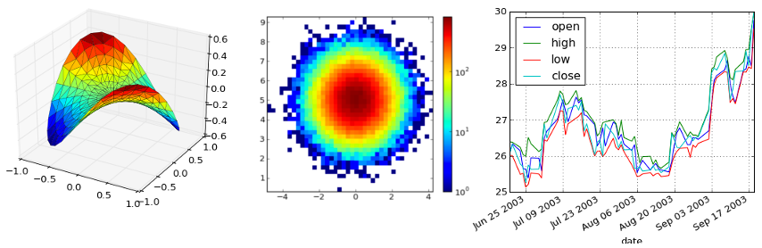

Aplicaciones de Machine Learning
ML esta en todas partes
Todos los Días Usamos ML
Recomendaciones

IA Generativa
Reconocimiento facial

Asistentes de voz
ML está en el correo, el teléfono, las redes sociales, el streaming...
Ejemplos: Robótica, Spam y Recomendación

Robótica

Detección de spam
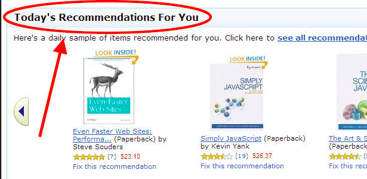
Recomendación
Computer Vision
Detección de rostros
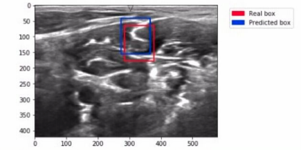
Imágenes médicas

Detección de objetos
Detección de armas
Juegos e IA

AlphaGo venció al campeón mundial de Go

OpenAI venció a jugadores profesionales de DOTA 2
NLP y Asistentes
Siri — Asistente de voz

Google Translate — Traducción en tiempo real
IA Generativa

ChatGPT — Generación de texto

Generación de imágenes
Asistentes y Agentes
Modelos que crean contenido nuevo, razonan y ejecutan tareas de forma autónoma
Vehículos Autónomos
Percepción del entorno, decisiones en tiempo real, predicción de movimiento
Análisis de Datos
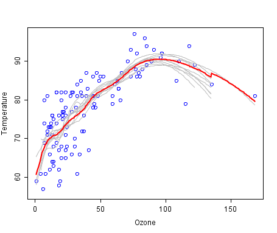
Regresión


Clasificación (Iris)

Clustering
¿Por qué ahora?
Motivación
¿Por qué necesitamos Machine Learning?
El Problema con Reglas y Lógica
Muchos problemas son muy difíciles o imposibles de resolver con programación tradicional (reglas y algoritmos explícitos).
¿Cómo explicamos qué es una camisa? ¿Y su diferencia con zapatos?
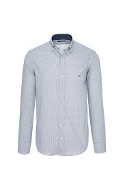
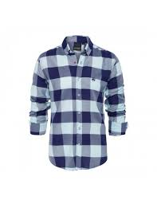
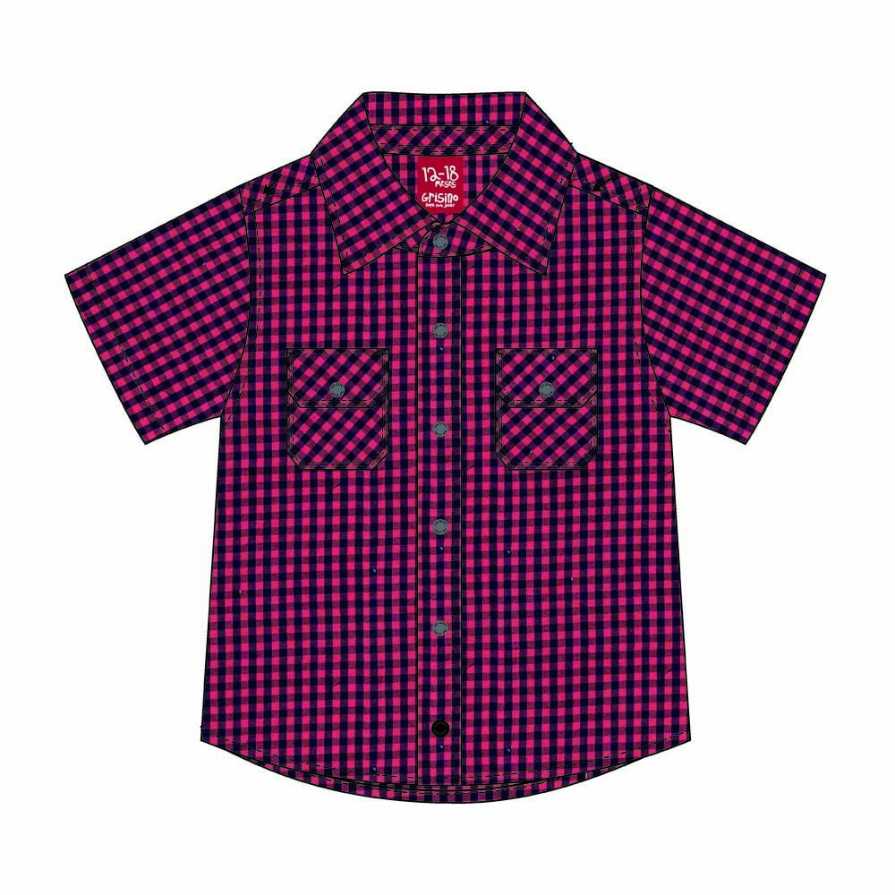

¿Qué reglas definen cada prenda? ¿Cómo las escribimos en código?
Algo tan sencillo para una persona es muy complicado de definir con reglas
Más Ejemplos: ¿Cómo Definir Reglas?
Todos son jirafas, pero
¿qué reglas definen "jirafa"?
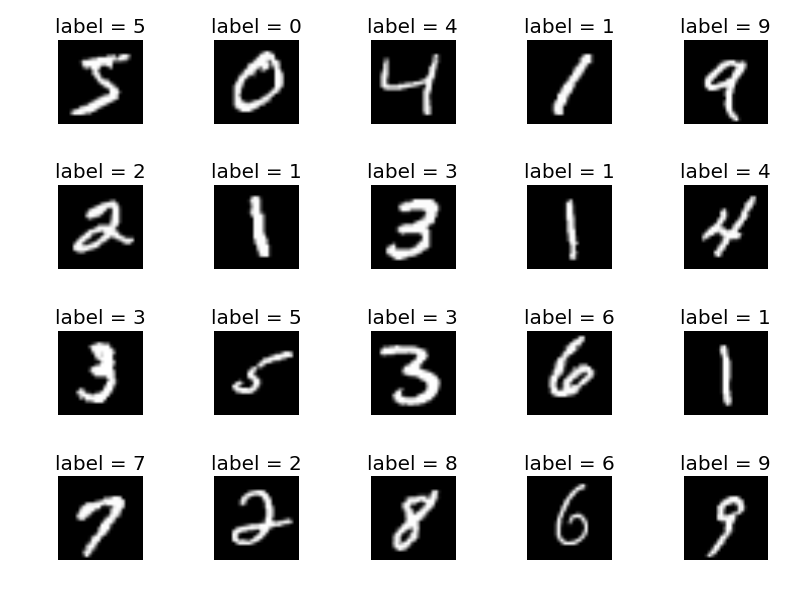
Dígitos escritos a mano
¿Qué hace que un "3" sea un "3"?
¿Cómo escribimos reglas explícitas para estos problemas?
No podemos. Son demasiado complejos.
Para la Computadora: Solo Números
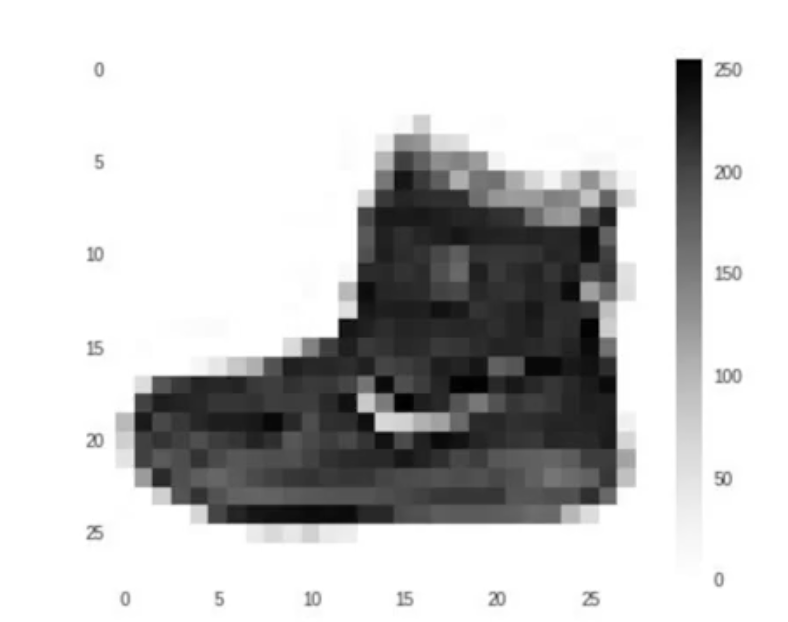
Imagen = matriz de píxeles
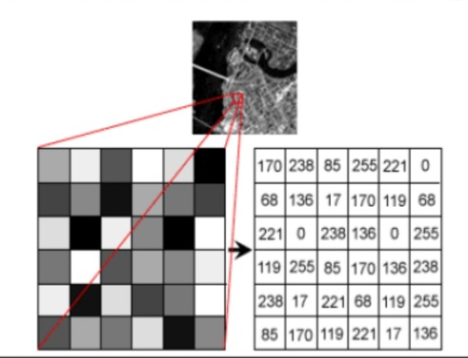
Cada píxel = un número (0-255)
Para la computadora, una imagen es solo una colección de números
Imágenes = Matrices de Números
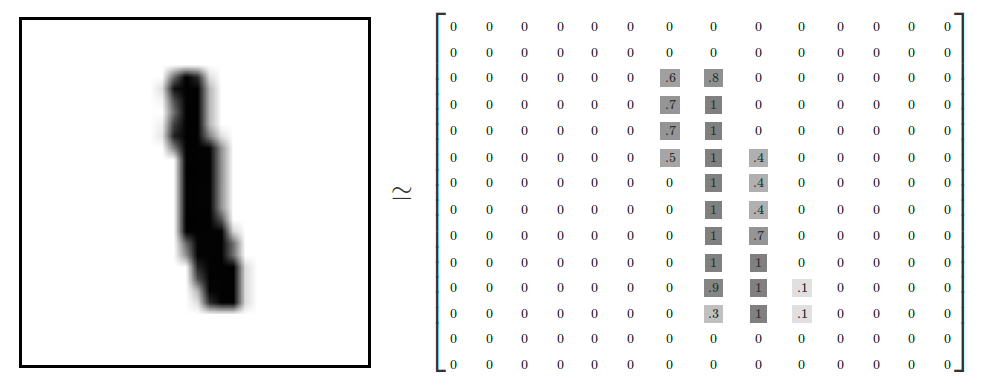
Un "1" = matriz de valores 0.0 a 1.0
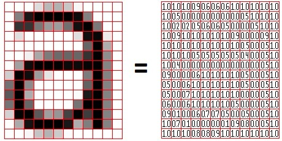
Un "0" = cuadrícula de valores
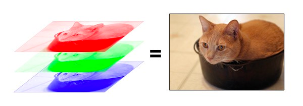
Imagen a color = 3 capas (R, G, B) → tensor 3D
El Mundo Tiene Mucha Varianza
1 bota
Muchas variaciones de "bota"
1 perro

Muchas variaciones de "pastor alemán"
Ángulo, luz, color, tamaño, fondo... la varianza del mundo real es enorme
Variedad en los Datos
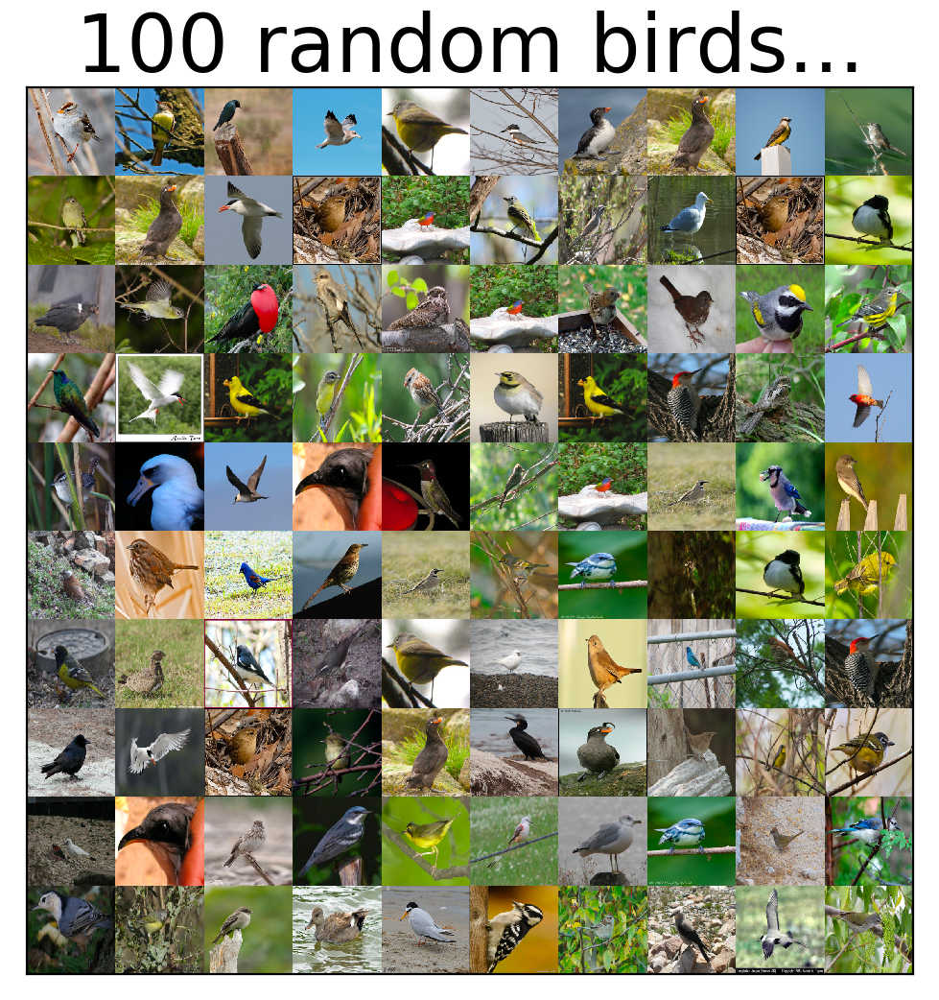
100 pájaros aleatorios
Muchas especies, poses, fondos
Variedad en el dataset
Diferentes condiciones de luz, clima, ángulo
Programación tradicional: imposible cubrir todos los casos
Machine Learning: aprende patrones estadísticos de miles de ejemplos
¿Qué Significa "Aprender"?
En ML, "aprender" = encontrar (identificar) una función matemática f(x) de manera automática usando datos.
ML = derivar inteligencia a partir de datos, mediante un proceso de "entrenamiento" en el que, dados muchos ejemplos previos, la computadora se ajusta para predecir en ejemplos futuros.
¿Cómo se ve f(x) por dentro?
Una red neuronal es una forma poderosa de representar f(x):
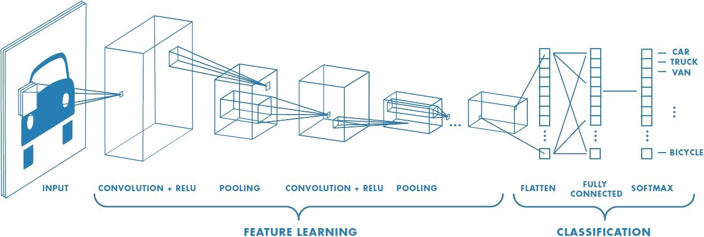
Red neuronal convolucional: de píxeles a clasificación
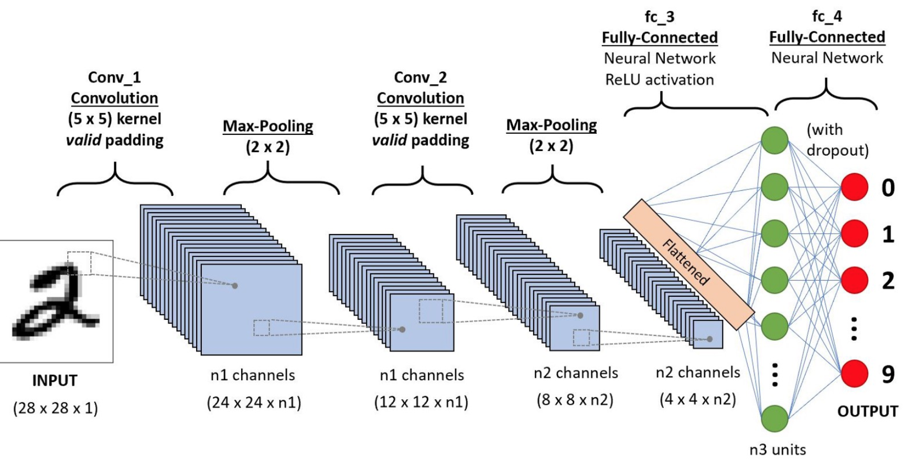
Ejemplo: reconocimiento de dígitos escritos a mano
TensorFlow Playground
Experimenta con una red neuronal directamente en tu navegador:
playground.tensorflow.org
Ajusta capas, neuronas, learning rate y datos — ¡y observa cómo aprende!
Resumen: ¿Por qué ML?
Ahora que sabemos por qué necesitamos ML, veamos qué es formalmente
¿Qué es Machine Learning?
Definición: Arthur Samuel (1959)
"Field of study that gives computers the ability to learn without being explicitly programmed."
Traducción: Campo de estudio que da a las computadoras la capacidad de aprender sin ser programadas explícitamente.
Samuel creó un programa de damas (checkers). Después de miles de partidas, el programa se volvió mejor que su creador.
Definición: Tom Mitchell (1998)
"A computer program is said to learn from experience E with respect to some task T and performance measure P, if its performance at T, as measured by P, improves with experience E."
Ejemplo: ¿Es un gato?
| E (Experiencia) | Miles de imágenes etiquetadas "cat" / "not cat" |
| T (Tarea) | Clasificar si una imagen nueva es gato o no |
| P (Desempeño) | Cat → Cat : 80% de accuracy |
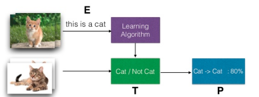
Tipos de Algoritmos de ML
En este curso nos enfocamos en aprendizaje supervisado y no supervisado
Aprendizaje Supervisado
El tipo más utilizado de ML
¿Qué es Aprendizaje Supervisado?
El algoritmo aprende de las "respuestas correctas"
Para cada input X en el training set, conocemos el output Y correcto.
El modelo aprende el mapeo X → Y para predecir en datos nuevos.
Ejemplos de Aprendizaje Supervisado
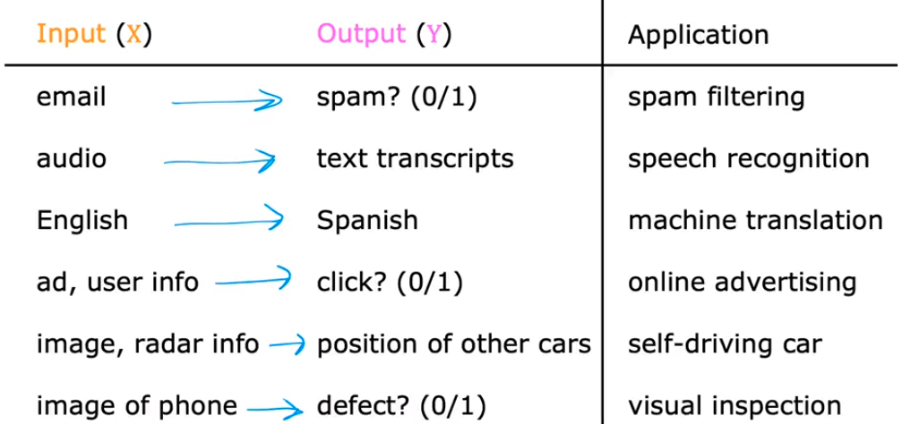
Patrón: siempre hay un Input X y un Output Y — el algoritmo aprende el mapeo
Ejemplo Clásico: Precios de Casas
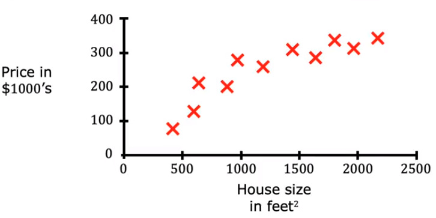
Input X = tamaño de casa (feet²) → Output Y = precio ($1000s)
¿Podemos encontrar la función que mapea tamaño → precio?
Regresión
Ejemplo: Predicción de precios de casas
Regresión: predecir un número
Infinitas salidas posibles
Ejemplo: tamaño de casa → precio
150m² → $183k? $200k? $150k?
Podemos ajustar una línea recta o una curva a los datos
Regresión: Línea vs Curva
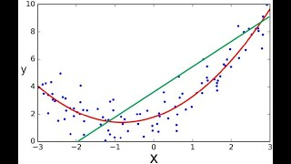
Línea recta vs curva polinomial — ¿cuál se ajusta mejor?
Más adelante veremos cómo elegir el modelo adecuado
Clasificación
Ejemplo: Detección de cáncer de mama
Clasificación: predecir una categoría
Número pequeño de salidas posibles
Ejemplo: tamaño de tumor → benigno o maligno
(0 o 1)
Puede tener múltiples clases:
Benigno, Maligno tipo 1, Maligno tipo 2
Clasificación: Image Classification
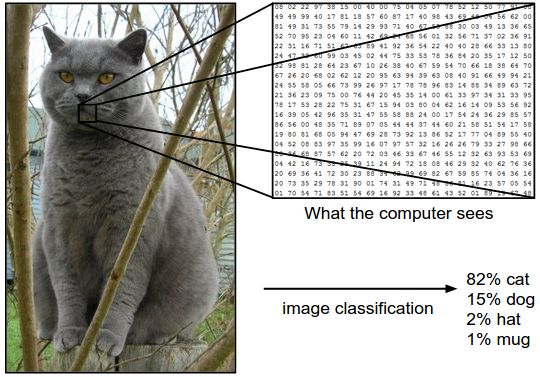
La computadora asigna probabilidades a cada categoría posible
82% gato, 15% perro, 2% sombrero, 1% taza — elige la de mayor probabilidad
Clasificación: Computer Vision
Detección de objetos en una escena
Object Detection: clasifica Y localiza cada objeto
Bounding box + clase + probabilidad de confianza
Clasificación: Ejemplo Médico
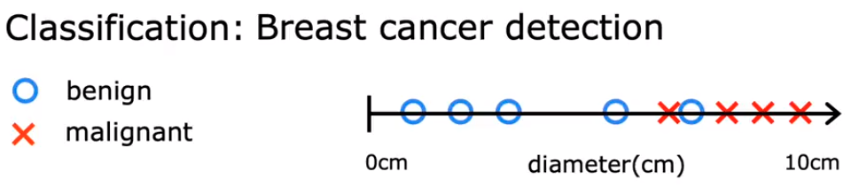
Con 1 feature: diámetro del tumor
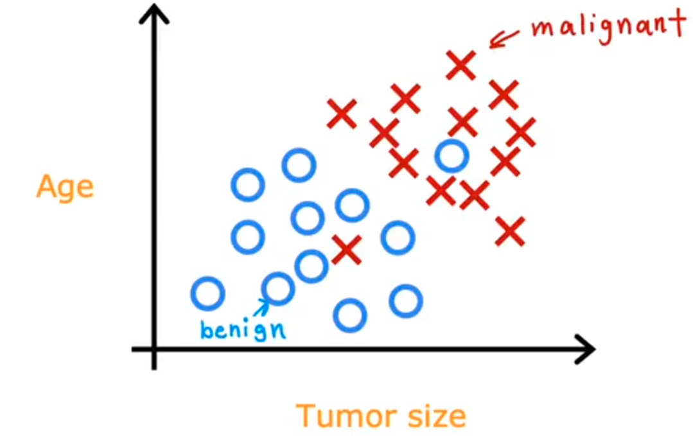
Con 2 features: tamaño + edad
○ = benigno, ✖ = maligno — el modelo encuentra la frontera de decisión
Clasificación con Múltiples Entradas
Con dos o más features de entrada:
- Eje X: tamaño del tumor
- Eje Y: edad del paciente
- El algoritmo encuentra una frontera de decisión
En la práctica se usan muchas más features
Resumen: Regresión vs Clasificación
Regresión
- Predice un número
- ∞ salidas posibles
- Precio, temperatura, ventas
Clasificación
- Predice una categoría
- Pocas salidas posibles
- Spam/no spam, gato/perro
Aprendizaje No Supervisado
Encontrar estructura en datos sin etiquetas
Supervisado vs No Supervisado
Supervisado
Datos con etiquetas
✖ = maligno,
● = benigno
No Supervisado
Datos sin etiquetas
Encuentra estructura automáticamente
Clustering
Clustering: agrupar datos similares automáticamente
Clustering: Algoritmo en Acción
Datos sin etiquetar
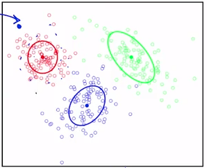
Grupos descubiertos
El algoritmo encuentra estructura oculta en los datos
Ejemplo: Google News
Google News agrupa automáticamente artículos sobre el mismo tema
Nadie le dice las categorías — el clustering las descubre mirando el contenido
Ejemplo: Agrupación de Pacientes
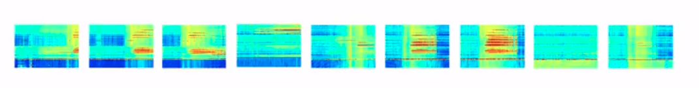
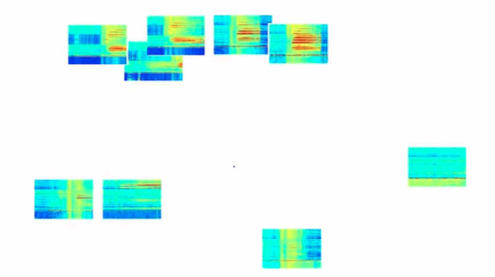
Agrupar pacientes por perfiles genéticos similares
Útil para descubrir subtipos de enfermedades y personalizar tratamientos
Más Aplicaciones de Clustering
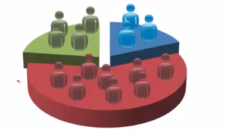
Segmentación de mercado
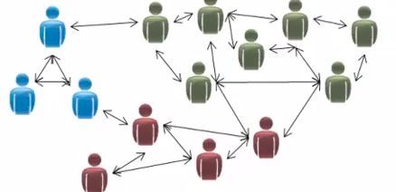
Análisis de redes sociales
Agrupación de productos
El clustering encuentra patrones en cualquier dominio donde hay datos sin etiquetar
Detección de Anomalías
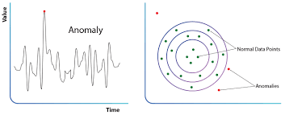
Identificar datos que son inusuales o fuera de lo normal
Aplicaciones: detección de fraude financiero, fallas en equipos industriales, intrusiones en redes
Reducción de Dimensionalidad
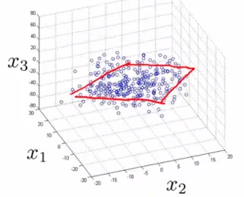
Datos en 3D
(x1, x2, x3)
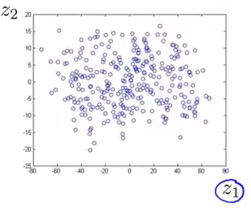
Proyección a 2D
(z1, z2)
Comprimir datos de muchas dimensiones a pocas, preservando la estructura
Útil para visualización, compresión de datos y acelerar otros algoritmos
Representación de Palabras (Word2Vec)
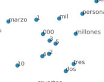
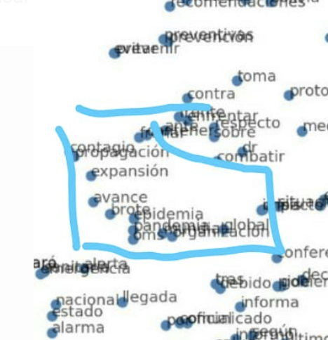
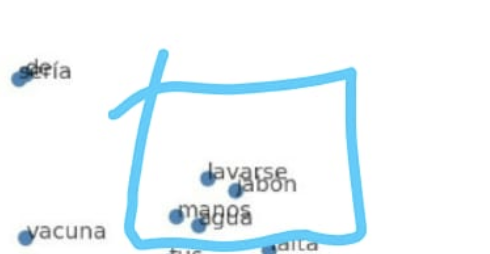
Palabras similares quedan cerca en el espacio vectorial
Las palabras se representan como vectores numéricos — base de los modelos de lenguaje modernos (GPT, BERT, etc.)
Modelos Generativos
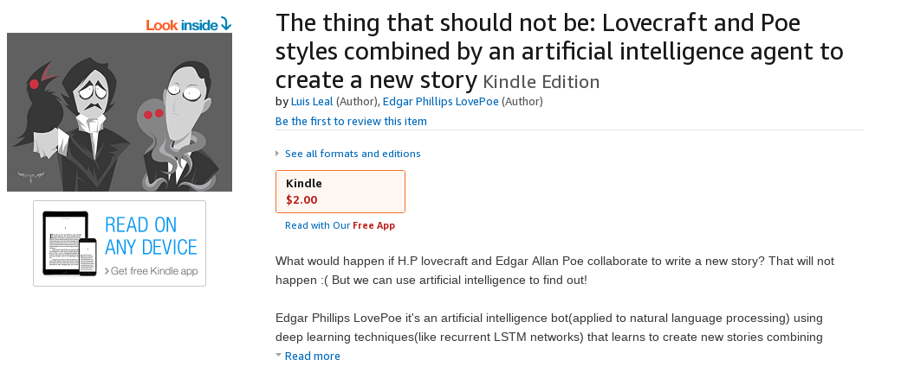
Generación de texto
IA combinando estilos literarios
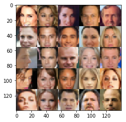
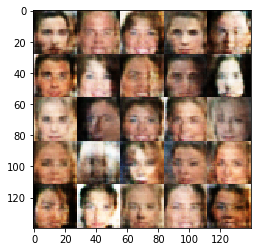
Generación de imágenes
Caras reales vs generadas por IA
Aprenden la distribución de los datos para crear contenido nuevo
Aprendizaje por Refuerzo (RL)
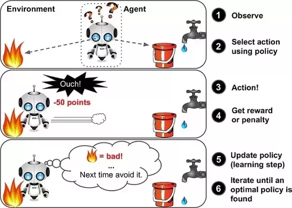
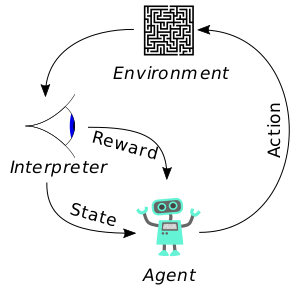
El agente aprende por prueba y error: acciones → recompensas/penalizaciones
Aplicaciones: juegos (AlphaGo, Atari), robótica, vehículos autónomos, afinamiento y alineamiento de modelos de lenguaje
RL en Acción

Click para ver el video — Un agente aprendiendo mediante recompensas y penalizaciones
Resumen: Tipos de ML
En este curso nos enfocamos en aprendizaje supervisado y no supervisado
Regresión Lineal con Una Variable
Empecemos con un ejemplo práctico
Ejemplo con scikit-learn
import numpy as np
from sklearn.linear_model import LinearRegression
# Datos de entrenamiento
X_train = np.array([[1.0], [2.0]]) # 1000 sqft
y_train = np.array([300.0, 500.0]) # $1000s
# Crear y entrenar el modelo (1 línea!)
modelo = LinearRegression()
modelo.fit(X_train, y_train)
# Parámetros aprendidos
print(f"w = {modelo.coef_[0]:.1f}") # 200.0
print(f"b = {modelo.intercept_:.1f}") # 100.0
# Predicción: casa de 1200 sqft
x_nuevo = np.array([[1.2]])
precio = modelo.predict(x_nuevo)
print(f"${precio[0]:.0f}k") # $340k
sklearn aprende/encuentra la función f(x) automáticamente. Pero ¿cómo lo hace?
¿Qué hace sklearn internamente?
Vamos a entender cada paso a fondo
Objetivo: Predecir Precios de Casas
Buscamos predecir el precio de venta de una casa en función de su tamaño, usando registros de casas vendidas en el pasado.
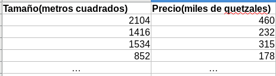
Datos históricos de ventas
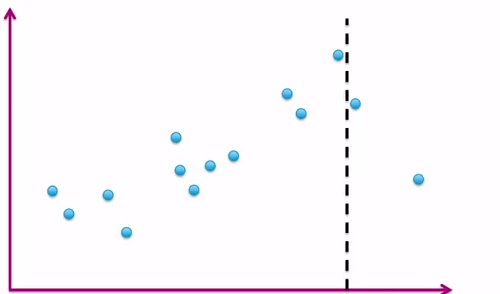
¿Precio para la línea punteada?
Este es un problema de regresión: predecir un número continuo (precio) a partir de una entrada (tamaño)
Representación del Modelo
La hipótesis: f(x) = wx + b
Terminología de ML
| Notación | Descripción | Python |
|---|---|---|
| x | Feature (variable de entrada) | x_train |
| y | Target (variable objetivo) | y_train |
| m | Número de ejemplos de entrenamiento | m |
| (x^{(i)}, y^{(i)}) | i-ésimo ejemplo de entrenamiento | x_train[i] |
| w, b | Parámetros del modelo (weight, bias) | w, b |
| f_{w,b}(x) | Modelo / hipotesis | f_wb |
Proceso de Aprendizaje
El Modelo Lineal
w (weight) = pendiente
- w > 0: recta sube
- w < 0: recta baja
- |w| grande: recta empinada
b (bias) = intercepto
- Donde la recta cruza el eje Y
- Desplaza la recta arriba/abajo
También: h(x) = θ1x + θ0
Ajustando w y b
Mueve los sliders para ajustar la recta. Objetivo: pasar por los puntos rojos.
Diferentes Valores de w, b
Necesitamos una forma de medir el error → Función de Costo
Función de Costo
Midiendo qué tan bueno es nuestro modelo
Intuición: Midiendo el Error
Las líneas punteadas muestran el error (residual) de cada predicción
error(i) = f(x(i)) - y(i)
Queremos minimizar estos errores
Función de Costo: MSE
Paso 1: Calcular el error: f_{w,b}(x^{(i)}) - y^{(i)}
Paso 2: Elevarlo al cuadrado: \left(\ldots\right)^2
- Errores arriba de la recta son positivos, abajo son negativos — se cancelarían al sumar
- Al elevar al cuadrado, todos se vuelven positivos
- Además, penaliza errores grandes más que errores pequeños
Paso 3: Sumar sobre todos los ejemplos: \sum_{i=0}^{m-1}
Paso 4: Promediar: \frac{1}{2m} — el 2 facilita la derivada
Objetivo Formal del ML
Con las piezas que ya tenemos, podemos definir el objetivo matemático del proceso de ML:
Dada una función de costo J, minimizar J en función de los parámetros w, b.
Se lee: "minimizar J respecto de w y b"
Los valores óptimos: w^*, b^* = \underset{w,b}{\text{argmin}} \; J(w,b)
Es decir, los valores de w y b que producen el menor error posible
Caso Simplificado: b = 0
Para entender la relación entre la hipótesis y el costo, asumimos b = 0:
Hipótesis simplificada:
Una recta que pasa por el origen
Función de costo (1 variable):
Diferentes valores de w generan diferentes rectas, cada una con un costo diferente.
Objetivo:
Encontrar el w que hace que la pendiente de la recta produzca el menor costo
J(w) con b fijo
Visualizando J(w, b) en 3D
Con dos parámetros (w, b), la función de costo forma una superficie en 3D
Forma de tazón (bowl) = función convexa → un único mínimo global.
A = punto inicial (costo alto) → B = mínimo global (costo bajo)
Superficie 3D: J(w, b)
Rota con el mouse. La forma convexa (bowl) garantiza un único mínimo global.
¿Qué es un Contour Plot?
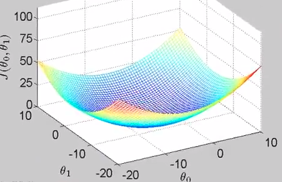
Superficie 3D de la función de costo
Imagina que ves la superficie 3D desde arriba.
Un contour plot (mapa de contorno) conecta con líneas todos los puntos que tienen el mismo valor de J.
Es la misma idea que las curvas de nivel en un mapa topográfico:
- Cada línea = una "altura" constante de J
- Líneas más juntas = pendiente más empinada
- El centro de los anillos = el mínimo
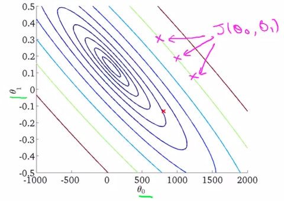
Cada ✕ es un par (\theta_0, \theta_1) diferente.
Moverse hacia el centro de las elipses reduce el costo J → mejor ajuste de la recta.
De Superficie 3D a Contour Plot
Cada punto en el contour corresponde a una recta de regresión diferente
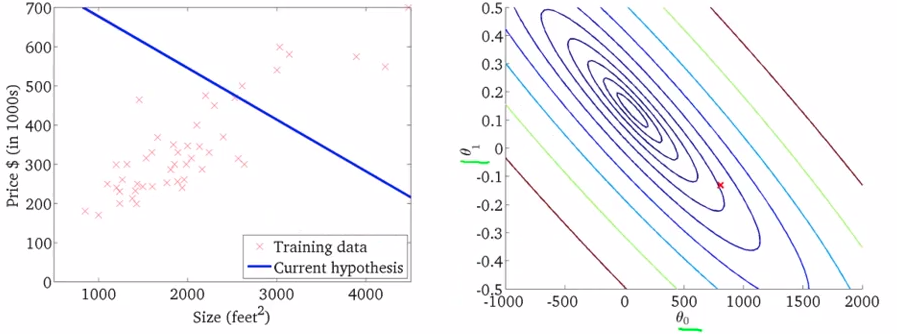
Lejos del centro → recta con mal ajuste → costo alto
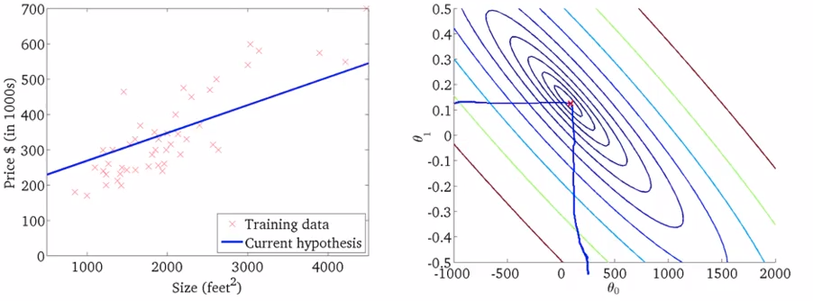
Cerca del centro → recta con buen ajuste → costo bajo
Gradient Descent nos lleva automáticamente al centro (mínimo de J)
Contour Plot de J(w, b)
Click en el contour para seleccionar w,b y ver la recta resultante. El diamante verde marca el mínimo óptimo.
Vista Completa: Superficie, Contour y Regresión
Curvas de nivel de J(w,b)
Superficie 3D de J(w,b)
Datos + recta de regresión
Click en las curvas de nivel para elegir w,b → se actualizan las 3 vistas. ◆ = mínimo ★ = selección actual
Resumen: Función de Costo
- J(w,b) mide qué tan bien el modelo se ajusta a los datos
- Minimizar J nos da los mejores parámetros w, b
- La superficie es convexa → un solo mínimo global
Pero... ¿cómo encontramos ese mínimo?
→ Gradient Descent
Repaso: Cálculo Multivariable
Lo que necesitamos para entender Gradient Descent
Recordatorio: La Derivada
La derivada f'(x) mide la tasa de cambio de f en el punto x
Es la pendiente de la recta tangente
Ejemplo: f(x)=x^2 \Rightarrow f'(x)=2x
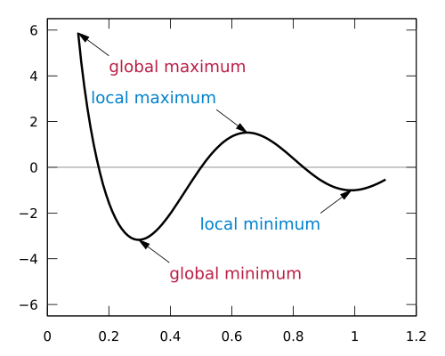
Máximos y mínimos locales vs globales: donde f'(x) = 0
Derivada Parcial: Intuición
Cuando f depende de varias variables, la derivada parcial mide el cambio en una sola dirección, manteniendo las demás constantes.
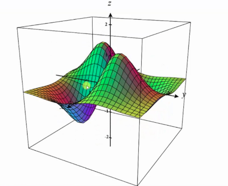
Cortes en cada dirección producen curvas con pendientes diferentesDerivadas Parciales: Ejemplos
Ejemplo 1: f(x,y) = x^2 + y^2
En (1, 2): ∂f/∂x = 2, ∂f/∂y = 4 → crece más rápido en dirección y
Ejemplo 2: f(x,y) = 3x^2y + 2xy^3
Regla: derivar respecto a una variable, tratar la otra como constante
Ejemplo 3 (ML): J(w,b) = \frac{1}{2}(wx+b-y)^2
Regla de la cadena: derivar el exterior, multiplicar por la derivada interior
Regla de la Cadena
Esencial para derivar funciones compuestas (como la función de costo):
Ejemplo paso a paso:
Sea u = wx - y, entonces J = \frac{1}{2}u^2
\frac{dJ}{du} = u = (wx-y) \frac{du}{dw} = x
\frac{dJ}{dw} = \frac{dJ}{du} \cdot \frac{du}{dw} = (wx - y) \cdot x
Esta es exactamente la fórmula que usaremos en Gradient Descent
El Vector Gradiente
El gradiente es un vector que combina todas las derivadas parciales.
Ejemplo: f(x,y) = x^2 + y^2
| En (1, 0): | \nabla f = [2, 0] → dirección +x |
| En (0, 1): | \nabla f = [0, 2] → dirección +y |
| En (1, 1): | \nabla f = [2, 2] → diagonal |
| En (0, 0): | \nabla f = [0, 0] → mínimo! |
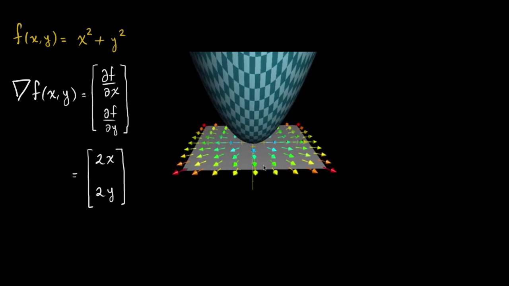
Las flechas muestran \nabla f: apuntan desde el mínimo hacia afuera
Visualización del Gradiente
Cada flecha es el gradiente \nabla f en ese punto
- Apuntan hacia afuera del mínimo (centro)
- Son más largas lejos del mínimo (mayor pendiente)
- Son cero en el mínimo
-\nabla f apunta hacia el mínimo = descenso más rápido
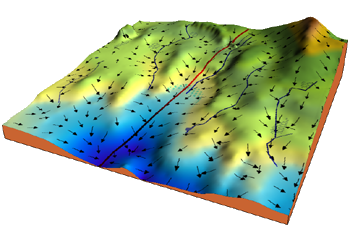
¿Por qué el Gradiente Apunta al Máximo Crecimiento?
La derivada direccional en dirección \mathbf{u} es:
\cos(\theta) se maximiza cuando \theta = 0
Es decir, cuando \mathbf{u} apunta en la misma dirección que \nabla f
Por lo tanto, \nabla f siempre indica la dirección donde f crece más rápido
Gradiente = Dirección de Máximo Incremento
El vector \nabla f(a,b) apunta en la dirección donde f crece más rápido desde el punto (a,b)
Derivada Direccional: Ejemplo
Sea f(x,y) = x^2 + y^2, punto (1, 2). Gradiente: \nabla f(1,2) = [2, 4], |\nabla f| \approx 4.47
| Dirección \mathbf{u} | \theta | D_\mathbf{u}f | Interpretación |
|---|---|---|---|
| [2,4] (mismo que ∇f) | 0° | 4.47 | Máximo crecimiento |
| [1,0] (eje x) | 63° | 2.0 | Crece, pero no al máximo |
| [4,-2] (perpendicular) | 90° | 0 | Sin cambio (curva de nivel) |
| [-2,-4] (opuesto a ∇f) | 180° | -4.47 | Máximo descenso |
Gradient Descent usa la dirección de máximo descenso: -\nabla f
Derivada Direccional en Python
import numpy as np # Gradiente de la función en un punto (ejemplo) g = np.array([3.0, 4.0]) # ∇f = [df/dx, df/dy] # Vector de dirección (no necesariamente unitario) u = np.array([1.0, 2.0]) # Normalizar el vector de dirección u_unit = u / np.linalg.norm(u) # Calcular la derivada direccional directional_derivative = np.dot(g, u_unit) print("Derivada direccional:", directional_derivative) # → 4.919...
D_\mathbf{u}f = \nabla f \cdot \hat{\mathbf{u}} — el producto punto entre el gradiente y la dirección unitaria
Curvas de Nivel y Gradiente
Las curvas de nivel conectan puntos con el mismo valor de f
- El gradiente ∇f es siempre perpendicular a las curvas de nivel
- Apunta hacia donde f crece más rápido
- Su magnitud indica qué tan empinada es la superficie
- -∇f apunta hacia el mínimo
Seguir -\nabla J paso a paso hasta llegar al mínimo
Superficie 3D con Curvas de Nivel
El gradiente ∇f es perpendicular a cada curva de nivel y apunta hacia el máximo
Superficie 3D y Campo Gradiente
f(x,y) = x^2 + y^2 — rota la superficie con el mouse
Las flechas naranjas muestran \nabla f: apuntan hacia afuera (máximo crecimiento). Gradient descent sigue -∇f (hacia el mínimo).
Campo Vectorial del Gradiente (2D)
Vista desde arriba: las flechas muestran \nabla f en cada punto
Flechas más largas = gradiente más fuerte (superficie más empinada). Todas apuntan desde el mínimo hacia afuera.
Superficie con Gradiente Negativo
f(x,y) = \sin(x)\cos(y) + \frac{x^2+y^2}{8} — superficie no convexa
En superficies no convexas, gradient descent puede quedar atrapado en mínimos locales
Conectando con ML
En nuestro caso, la función a minimizar es J(w,b):
∂J/∂w dice cuánto y en qué dirección mover w
∂J/∂b dice cuánto y en qué dirección mover b
Juntos, el gradiente nos guía al mínimo de J
Gradient Descent
Descenso de Gradiente: el algoritmo de optimización más importante
La Idea Intuitiva: Paso a Paso
Click en el mapa para elegir punto de inicio. Colores = altura de la montaña.
Eso es exactamente Gradient Descent: dirección = -\nabla f | tamaño del paso = \alpha \cdot |\nabla f|
El Algoritmo
b := b - \alpha \frac{\partial J(w,b)}{\partial b}
Repetir hasta convergencia
α = learning rate (tasa de aprendizaje) — tamaño del paso
∂J/∂w = derivada parcial — la dirección del paso
Actualización Simultánea
Es crítico actualizar w y b al mismo tiempo
✔ Correcto
# Calcular ambas derivadas PRIMERO
dj_dw = ... # con w y b actuales
dj_db = ... # con w y b actuales
# LUEGO actualizar ambos
w = w - alpha * dj_dw
b = b - alpha * dj_db
✘ Incorrecto
# NO hacer esto:
dj_dw = ... # con w actual
w = w - alpha * dj_dw # w cambia!
# dj_db usa el w NUEVO (incorrecto)
dj_db = ... # con w MODIFICADO!
b = b - alpha * dj_db
Derivadas para Regresión Lineal
Para f_{w,b}(x) = wx + b :
La única diferencia: la derivada respecto a w tiene un factor extra x^{(i)}
Ejemplo Paso a Paso
Datos: x=[1, 2], y=[300, 500] | α=0.1 | w0=0, b0=0
| Iter | w | b | ∂J/∂w | ∂J/∂b | J(w,b) |
|---|---|---|---|---|---|
| 0 | 0.0 | 0.0 | -650.0 | -400.0 | 85000 |
| 1 | 65.0 | 40.0 | -296.5 | -171.0 | 19886 |
| 2 | 94.7 | 57.1 | -135.2 | -73.2 | 4650 |
| 3 | 108.2 | 64.4 | -61.7 | -31.3 | 1089 |
| ... | ... | ... | ... | ... | ... |
| ∞ | 200.0 | 100.0 | 0.0 | 0.0 | 0.0 |
✔ Converge a w=200, b=100 — los mismos valores que sklearn!
Gradient Descent en Acción
Mínimos Locales vs Global
Función no convexa
Múltiples mínimos locales
Regresión lineal: CONVEXA
Un solo mínimo global
Para regresión lineal, Gradient Descent siempre encuentra el mínimo global
Convergencia
El costo siempre debe disminuir en cada iteración
Si aumenta, el learning rate es demasiado grande
Learning Rate (α)
Experimenta con α
Ajusta el learning rate y observa cómo se comporta la "pelota" sobre la curva de costo
Resultado Final
Predicciones:
| 1000 sqft | → | $300k |
| 1200 sqft | → | $340k |
| 2000 sqft | → | $500k |
Los mismos valores que sklearn encontró automáticamente!
Variantes de Gradient Descent
Lo que vimos es Batch Gradient Descent: usa todo el training set en cada iteración.
Pero... ¿qué pasa si el training set es demasiado grande?
Batch GD
Usa todo el dataset en cada paso
Convergencia suave, pero lento con datos grandes
Mini-Batch GD
Usa un subconjunto (e.g. 32, 64 ejemplos)
Balance entre velocidad y estabilidad
SGD (Estocástico)
Usa 1 solo ejemplo por paso
Muy rápido, pero convergencia ruidosa
Batch vs Mini-Batch vs SGD
Trayectorias en el espacio de parámetros
Curvas de costo
| Batch GD | SGD | Mini-Batch GD | |
|---|---|---|---|
| Datos por paso | Todo el dataset | 1 ejemplo | Subconjunto (32-256) |
| Convergencia | Suave | Muy ruidosa | Moderada |
| En la práctica | Datasets pequeños | Datos en streaming | El más común |
Regresión Lineal como Neurona
- Una red neuronal es composición de funciones
- Cada función se llama "neurona": una activación aplicada a un modelo lineal de las entradas
- La regresión lineal es una neurona con activación identidad f(z) = z
- Todo lo aprendido con GD aplica directamente a redes neuronales
Gradient Descent: Método General
GD es un método general de optimización de funciones.
Con lo que ya aprendimos, tenemos las bases para desarrollar nuevos algoritmos de ML, no solamente regresión lineal de 1 variable.
Múltiple
Semana 2
Logística
Clasificación
Neuronales
Deep Learning
El mismo algoritmo de GD (con variaciones) se usa para entrenar todos estos modelos.
Resumen de la Semana 1
Definiciones y tipos
Regresión & Clasificación
f(x) = wx + b
J(w,b) = MSE
Minimizar J
Conceptos clave:
- ML aprende de datos, no de reglas explícitas
- Regresión = predecir números; Clasificación = predecir categorías
- La función de costo mide el error del modelo
- Gradient Descent minimiza el costo ajustando w y b
- El learning rate controla la velocidad de convergencia
Notebooks para Practicar
Implementar f(x) = wx + b y experimentar con diferentes w, b
Visualizar la función de costo J(w,b) y entender los residuales
Implementar gradient descent paso a paso
Vectorización con NumPy para código eficiente
Próxima Clase
- Regresión Lineal Multivariable
Múltiples features: f(x) = w·x + b - Feature Engineering
Crear mejores features para mejorar el modelo - Vectorización
Implementación eficiente con NumPy
Material adaptado de DeepLearning.AI (CC BY-SA 2.0) y Universidad Galileo
Semana 2
Regresión Lineal Multivariable
Múltiples features • Vectorización • Feature Scaling • Regresión Polinomial
Recapitulación: Semana 1
f_{w,b}(x) = wx + b
J(w,b) = \frac{1}{2m}\sum(f-y)^2
w := w - \alpha \frac{\partial J}{\partial w}
Todo con una sola feature (tamaño → precio)
¿Qué pasa cuando tenemos más información?
¿Y si tenemos más features?
| Tamaño (1000 sqft) | # Habitaciones | # Pisos | Edad (años) | Precio ($1000s) |
|---|---|---|---|---|
| 2.104 | 5 | 1 | 45 | 460 |
| 1.416 | 3 | 2 | 40 | 232 |
| 1.534 | 3 | 2 | 30 | 315 |
| 0.852 | 2 | 1 | 36 | 178 |
| 1.856 | 4 | 2 | 20 | 429 |
Antes: x = tamaño → una variable
Ahora: \vec{x} = [tamaño, habitaciones, pisos, edad] → n variables
Regresión Lineal Múltiple
De 1 feature a n features
Notación
| Símbolo | Significado |
|---|---|
| n | Número de features |
| x_j | Feature j-ésima |
| \vec{x}^{(i)} | Vector de features del ejemplo i |
| x_j^{(i)} | Feature j del ejemplo i |
| \vec{w} | Vector de pesos [w_1, w_2, \ldots, w_n] |
| b | Bias (intercepto) |
Ejemplo: casa i=2 → \vec{x}^{(2)} = [1.416, 3, 2, 40]
Feature edad: x_4^{(2)} = 40
Modelo: Regresión Lineal Múltiple
Antes (1 feature):
Ahora (n features):
Ejemplo con nuestros datos:
Forma Vectorial: Producto Punto
La suma w_1 x_1 + w_2 x_2 + \cdots + w_n x_n es un producto punto:
donde:
\vec{w} = [w_1, w_2, \ldots, w_n]
\vec{x} = [x_1, x_2, \ldots, x_n]
\vec{w} \cdot \vec{x} = \sum_{j=1}^{n} w_j x_j
También llamado multiple linear regression
De Línea a Plano
Con 2 features, el modelo es un plano en 3D
Modelo:
f(\vec{x}) = w_1 x_1 + w_2 x_2 + b
● Datos reales
■ Plano de regresión
| Residuos
Arrastra para rotar
Ejemplo: sklearn con Múltiples Features
import numpy as np
from sklearn.linear_model import LinearRegression
# Datos: [tamaño, habs, pisos, edad]
X = np.array([[2.104,5,1,45], [1.416,3,2,40], [1.534,3,2,30],
[0.852,2,1,36], [1.856,4,2,20]])
y = np.array([460, 232, 315, 178, 429])
modelo = LinearRegression()
modelo.fit(X, y)
print(f"w = {modelo.coef_}") # pesos para cada feature
print(f"b = {modelo.intercept_}") # bias
print(f"Predicción: {modelo.predict([[1.8, 3, 2, 25]])}")
sklearn hace esto internamente con la ecuación normal
Nosotros aprenderemos a hacerlo con gradient descent
Ecuación Normal: Solución Analítica
Existe una solución directa (sin iteraciones) para regresión lineal:
import numpy as np
# Agregar columna de 1s para bias
X_b = np.c_[np.ones(m), X]
# Ecuación normal
theta = np.linalg.inv(X_b.T @ X_b) @ X_b.T @ y
# O más estable numéricamente:
theta, _, _, _ = np.linalg.lstsq(X_b, y, rcond=None)
| Ec. Normal | GD | |
|---|---|---|
| Iteraciones | No | Sí |
| Learning rate | No | Sí |
| Complejidad | O(n^3) | O(kn^2) |
| n grande | Lento | Escala bien |
| Otros modelos | Solo lineal | General |
Widget: Ajusta los Pesos
Modifica w_1, w_2, w_3, w_4, b y observa las predicciones
Función de Costo
para Múltiples Variables
Función de Costo: Múltiples Variables
Recordatorio de Semana 1 (1 variable):
Extensión a n features:
donde f_{\vec{w},b}(\vec{x}) = \vec{w} \cdot \vec{x} + b = w_1 x_1 + w_2 x_2 + \cdots + w_n x_n + b
La Superficie de Costo en nD
1 feature
Superficie 3D
J(w, b) — podemos visualizar
2 features
Contornos de J(w₁, w₂, b)
Elipses concéntricas
n features
No podemos ver, pero sigue
siendo convexa → GD funciona
Costo Multivariable en Python
import numpy as np
from sklearn.metrics import mean_squared_error
# Datos: X shape (m, n), y shape (m,)
X = np.array([[2104,5,1,45],[1416,3,2,40],
[1534,3,2,30],[852,2,1,36]])
y = np.array([460, 232, 315, 178])
# Implementación manual
def compute_cost(X, y, w, b):
m = len(y)
f = X @ w + b # predicciones (vectorizado)
cost = (1/(2*m)) * np.sum((f - y)**2)
return cost
w = np.zeros(X.shape[1]) # n pesos iniciales
b = 0.0
print(f"Costo inicial: {compute_cost(X, y, w, b):.2f}")
# Con sklearn (después de entrenar)
from sklearn.linear_model import LinearRegression
model = LinearRegression().fit(X, y)
y_pred = model.predict(X)
print(f"MSE sklearn: {mean_squared_error(y, y_pred):.2f}")
De J al Gradiente
El objetivo: encontrar \vec{w}, b que minimicen J(\vec{w}, b)
\min_{\vec{w},b} J(\vec{w},b)
Para eso necesitamos las derivadas parciales:
\frac{\partial J}{\partial w_j} \quad \text{para cada } j = 1, \ldots, n \quad \text{y} \quad \frac{\partial J}{\partial b}
Primero veamos vectorización para hacer estos cálculos eficientemente, luego aplicamos Gradient Descent.
Vectorización
Código más rápido y más limpio
¿Qué es Vectorización?
Sin vectorización (loop)
f = 0
for j in range(n):
f = f + w[j] * x[j]
f = f + b
Operaciones secuenciales: una a la vez
Con vectorización (NumPy)
f = np.dot(w, x) + b
Una sola operación: todas en paralelo
Mismo resultado, pero np.dot es 100-1000x más rápido con datos grandes
¿Por qué es más rápido?
- Hardware paralelo: CPUs modernas tienen instrucciones SIMD que procesan múltiples datos simultáneamente
- NumPy usa librerías optimizadas en C/Fortran (BLAS, LAPACK)
- GPUs: miles de núcleos pequeños — vectorización es esencial para deep learning
import numpy as np, time
n = 10_000_000
w = np.random.rand(n)
x = np.random.rand(n)
# Loop
t0 = time.time()
f = 0
for j in range(n):
f += w[j] * x[j]
print(f"Loop: {time.time()-t0:.3f}s")
# Vectorizado
t0 = time.time()
f = np.dot(w, x)
print(f"Dot: {time.time()-t0:.3f}s")
Visualización: Loop vs Dot Product
Observa cómo las operaciones se ejecutan secuencialmente vs en paralelo
Gradient Descent Vectorizado
Con loops
for i in range(m):
err = f(x[i]) - y[i]
for j in range(n):
dw[j] += err * x[i][j]
db += err
w = w - alpha * dw / m
b = b - alpha * db / m
Vectorizado
err = X @ w + b - y
dw = (1/m) * X.T @ err
db = (1/m) * np.sum(err)
w = w - alpha * dw
b = b - alpha * db
El operador @ en NumPy es multiplicación de matrices (np.matmul)
Gradient Descent
para Múltiples Variables
Algoritmo Extendido
Misma idea, más parámetros:
Actualización simultánea de todos los w_j y b
Derivadas Parciales
Nota: cada \frac{\partial J}{\partial w_j} se multiplica por x_j^{(i)} — la feature correspondiente
1 Variable vs n Variables
1 feature
n features
La regla de b es idéntica. La de w_j solo agrega el subíndice j.
Alternativa: La Ecuación Normal
| Gradient Descent | Ecuación Normal | |
|---|---|---|
| Iterativo | Sí | No (solución directa) |
| Learning rate \alpha | Necesario | No necesario |
| Escala con n grande | Bien | Lento O(n^3) |
| Uso en la práctica | Muy común | Solo n < 10,000 |
sklearn usa la ecuación normal internamente para LinearRegression
Feature Scaling
Hacer que gradient descent converja más rápido
El Problema: Rangos Diferentes
Nuestras features tienen rangos muy distintos:
| Feature | Rango |
|---|---|
| x_1 Tamaño | 0.8 – 2.5 (1000 sqft) |
| x_2 Habitaciones | 2 – 5 |
| x_3 Pisos | 1 – 2 |
| x_4 Edad | 10 – 50 (años) |
Resultado: contornos de J son elipses alargadas → GD zigzaguea
Sin scaling vs con scaling
3 Técnicas de Feature Scaling
1. Dividir por máximo:
x_j^{\text{scaled}} = \frac{x_j}{\max(x_j)}Rango resultante: [0, 1]
2. Mean normalization:
x_j^{\text{scaled}} = \frac{x_j - \mu_j}{\max(x_j) - \min(x_j)}Rango resultante: aprox. [-0.5, 0.5]
3. Z-score normalization:
x_j^{\text{scaled}} = \frac{x_j - \mu_j}{\sigma_j}Rango resultante: media=0, desv. est.=1
Ejemplo: Scaling del Tamaño
x_1 = Tamaño: [2.104, 1.416, 1.534, 0.852, 1.856, 2.500, 1.200, 1.800]
\mu = 1.658, \sigma = 0.507, min=0.852, max=2.500
| Original | ÷ max | Mean norm. | Z-score |
|---|---|---|---|
| 2.104 | 0.842 | 0.271 | 0.880 |
| 1.416 | 0.566 | -0.147 | -0.477 |
| 0.852 | 0.341 | -0.489 | -1.590 |
| 2.500 | 1.000 | 0.511 | 1.661 |
Escalado en Python: 3 Técnicas
Min-Max Scaling
Rango: [0, 1]
from sklearn.preprocessing import MinMaxScaler
scaler = MinMaxScaler()
X_scaled = scaler.fit_transform(X)
print(scaler.data_min_) # mínimos
print(scaler.data_max_) # máximos
Mean Normalization
Rango: ≈ [-0.5, 0.5]
# Manual (no hay sklearn)
import numpy as np
mu = X.mean(axis=0)
rng = X.max(axis=0) - X.min(axis=0)
X_scaled = (X - mu) / rng
Z-Score (StandardScaler)
Media: 0, Std: 1
from sklearn.preprocessing import StandardScaler
scaler = StandardScaler()
X_scaled = scaler.fit_transform(X)
print(scaler.mean_) # medias
print(scaler.scale_) # desv. est.
Regla práctica: buscar que cada feature tenga rango -1 \leq x_j \leq 1 (aproximadamente)
Widget: Feature Scaling y Convergencia
Compara gradient descent sin scaling vs con scaling
Feature Engineering
y Regresión Polinomial
¿Qué es Feature Engineering?
Crear nuevas features a partir de las existentes usando conocimiento del dominio.
Ejemplo: Predicción de precio de casa
Features originales: x_1 = frontage, x_2 = depth
El área puede predecir mejor el precio que frontage y depth por separado
"Feature engineering es el arte más importante en ML"
Nota: en Deep Learning el feature engineering es menos necesario... pero requiere más datos y procesamiento
Tipos de Feature Engineering
1. Seleccionar
Elegir features relevantes, descartar irrelevantes
| ¿Marca del auto afuera? | ✗ No |
| ¿Código del vendedor? | ✗ No |
| ¿Colonia con seguridad? | ✓ Sí |
| ¿Nombre del vecino? | ? Analizar |
2. Crear
Combinar features existentes
area = frontage × depth
baños = total_cuartos − habitaciones
antigüedad = año_actual − año_construcción
3. Transformar
Cambiar representación
Texto → números (NLP)
Escalado/normalización
Potencias: x, x^2, x^3
\log(x), \sqrt{x}
Feature Engineering en Python
import pandas as pd
import numpy as np
df = pd.DataFrame({
'frontage': [40, 60, 50, 45, 55],
'depth': [100, 80, 120, 90, 110],
'cuartos_total': [8, 6, 10, 7, 9],
'habitaciones': [4, 3, 5, 3, 4]
})
# CREAR nuevas features
df['area'] = df['frontage'] * df['depth']
df['banos'] = df['cuartos_total'] - df['habitaciones']
# TRANSFORMAR
df['log_area'] = np.log(df['area'])
# SELECCIONAR features relevantes
X = df[['area', 'habitaciones', 'banos']].values
Herramientas comunes: NumPy, Pandas, sklearn.preprocessing
No hay razón para usar solo las features originales — usa las que más convengan al modelo
¿Qué pasa con datos no lineales?
A veces los datos no siguen una línea recta:
Solución: features polinomiales
Comparación de Modelos
Cuadrática: \theta_0 + \theta_1 x + \theta_2 x^2
Cúbica: \theta_0 + \theta_1 x + \theta_2 x^2 + \theta_3 x^3
Cuidado: x^2, x^3 crecen rápido → feature scaling es crucial en regresión polinomial
Regresión Polinomial en Python
Forma manual (NumPy):
import numpy as np
x = np.array([1, 2, 3, 4, 5, 6, 7])
# Crear features: x, x², x³
X_poly = np.column_stack([
x, x**2, x**3
])
print(X_poly.shape) # (7, 3)
Con sklearn Pipeline:
from sklearn.preprocessing import (
PolynomialFeatures,
StandardScaler)
from sklearn.pipeline import Pipeline
from sklearn.linear_model import (
LinearRegression)
pipe = Pipeline([
('poly', PolynomialFeatures(3)),
('scaler', StandardScaler()),
('reg', LinearRegression())
])
pipe.fit(x.reshape(-1,1), y)
Preprocesamiento: \varphi(x)
Denotamos toda transformación de features como una función \varphi(x):
Regla fundamental:
Toda transformación aplicada en entrenamiento debe aplicarse igual en predicción.
Si escalamos, debemos guardar los "momentos" (media, std) del training set.
# Entrenamiento: fit + transform
scaler = StandardScaler()
X_train_scaled = scaler.fit_transform(X_train) # aprende μ, σ
pipe.fit(X_train_scaled, y_train)
# Predicción: SOLO transform (usa μ, σ guardados)
X_new_scaled = scaler.transform(X_new) # NO fit_transform!
prediccion = pipe.predict(X_new_scaled)
Overfitting vs Underfitting
Underfitting
Modelo demasiado simple
Ej: grado 1 para datos curvos
Error alto en training y test
→ "Alto bias"
Buen Ajuste
Modelo de complejidad adecuada
Ej: grado 2 para datos cuadráticos
Generaliza bien a datos nuevos
→ Balance bias/varianza
Overfitting
Modelo demasiado complejo
Ej: grado 13 para 10 puntos
Error ≈0 en training, alto en test
→ "Alta varianza"
Analogía: memorizar los ejemplos del examen vs aprender el concepto
Capacidad del Modelo
Capacidad = conjunto de funciones que un modelo puede representar (espacio de hipótesis \mathcal{H}).
Poca capacidad → no puede ajustar los datos (underfitting). Mucha capacidad → memoriza ruido (overfitting).
Navaja de Occam y Selección de Modelos
Navaja de Occam
Ante dos modelos que expliquen bien los datos, elegir el más simple.
En regresión polinomial: usar el menor grado que ajuste bien.
Error de Bayes: aún el modelo perfecto tiene error por ruido en los datos. Es el error irreducible.
¿Cómo elegimos el mejor modelo en la práctica?
→ Validación cruzada: dividir los datos en train/test, entrenar con uno y evaluar con el otro.
Lo veremos a fondo en próximas clases.
Widget: Regresión Polinomial Interactiva
Selecciona el grado del polinomio y observa el ajuste
Resumen: Semana 2
Lo que Aprendimos
Múltiple
\vec{w} \cdot \vec{x} + b
np.dot(w, x)w_j := w_j - \alpha \frac{\partial J}{\partial w_j}
Z-score, Mean norm.
Crear nuevas features
w_1 x + w_2 x^2 + \cdots
Regresión Simple vs Múltiple
| Simple (Semana 1) | Múltiple (Semana 2) | |
|---|---|---|
| Features | 1 | n |
| Modelo | f = wx + b | f = \vec{w} \cdot \vec{x} + b |
| Parámetros | w, b | w_1 \ldots w_n, b |
| GD | 2 actualizaciones | n+1 actualizaciones |
| Feature Scaling | No necesario | Muy recomendado |
| Visualización | Recta en 2D | Hiperplano en nD |
Próxima semana: Regresión Logística — clasificación con ML
Notebooks para practicar: 04_Multiple_Variable_Linear_Regression.ipynb
Material adaptado de DeepLearning.AI (CC BY-SA 2.0) y Universidad Galileo
Mirando Adelante: Regresión Lineal como Neurona
- Todo lo que aprendimos esta semana es una sola neurona con n entradas
- Cada feature x_j tiene su peso wj, la neurona calcula \vec{w} \cdot \vec{x} + b
- Activación lineal: f(z) = z
- Próxima semana: cambiar la activación a sigmoid → regresión logística
- Agregar más capas de neuronas → red neuronal profunda (deep learning)
Semana 3
Clasificación y Regresión Logística
- 📊 Introducción a Clasificación
- 🔍 K-Nearest Neighbors (KNN)
- 📈 Regresión Logística & Sigmoid
- 🎯 Frontera de Decisión
- 💰 Función de Costo Logística
- ⚖️ Regularización
- 🔢 Clasificación Múltiple
Material adaptado de DeepLearning.AI (CC BY-SA 2.0) y Universidad Galileo
¿Qué es Clasificación?
Predecir una categoría discreta, no un valor continuo.
- y \in \{0, 1\} — Clasificación binaria
- y \in \{0, 1, 2, ..., K\} — Multi-clase
| Regresión | Clasificación |
|---|---|
| Precio de casa | Spam / No spam |
| Temperatura | Tumor benigno / maligno |
| Ventas futuras | Fraude / legítimo |
Ejemplos de Clasificación
Input: texto del email
Output: spam (1) / no spam (0)
Input: síntomas, exámenes
Output: benigno (0) / maligno (1)
Input: monto, ubicación, hora
Output: legítimo (0) / fraude (1)
Input: texto de reseña
Output: negativo (0) / positivo (1)
¿Por qué NO usar Regresión Lineal?
Regresión lineal: el umbral se mueve con outliers → clasificaciones incorrectas
Tipos de Clasificadores
| Paramétricos | No Paramétricos |
|---|---|
| Regresión Logística | K-Nearest Neighbors (KNN) |
| SVM (Support Vector Machine) | Árboles de Decisión |
| Redes Neuronales | Random Forest |
| Aprenden θ fijo | Usan datos directamente |
Esta semana: KNN (no paramétrico) + Regresión Logística (paramétrico)
Clasificación Binaria
Variable objetivo: y \in \{0, 1\}
Clase Negativa (0)
Benigno, No spam, Legítimo
Clase Positiva (1)
Maligno, Spam, Fraude
Objetivo del clasificador:
Aprender una función f(\vec{x}) \to \{0, 1\} que mapee features a clases
K-Nearest Neighbors (KNN)
"Dime con quién andas y te diré quién eres"
Idea: Clasificar un punto nuevo basándose en la clase de sus K vecinos más cercanos.
Tipo: No paramétrico — no aprende pesos, usa los datos directamente.
Algoritmo KNN: Paso a Paso
- Calcular distancias entre el punto nuevo y todos los puntos de entrenamiento
- Encontrar los K puntos más cercanos (vecinos)
- Voto mayoritario: la clase más frecuente entre los K vecinos gana
Distancia Euclidiana:
d(\vec{x}, \vec{x}') = \sqrt{\sum_{j=1}^{n}(x_j - x'_j)^2}
KNN Interactivo
Click en el canvas para clasificar un punto nuevo
Distancias en KNN
Euclidiana (L2)
d = \sqrt{(x_1-x_1')^2 + (x_2-x_2')^2}
Línea recta entre puntos.
Sensible a escala → normalizar!
Manhattan (L1)
d = |x_1-x_1'| + |x_2-x_2'|
Distancia "por cuadras".
Útil en dimensiones altas.
Euclidiana vs Manhattan: Visualización
━ Euclidiana (L2)
Camino más corto:
"en línea recta"
┅ Manhattan (L1)
Camino por cuadras:
"como un taxi"
L1 ≥ L2 siempre
Solo son iguales si el
camino es eje-alineado
KNN en Python
from sklearn.neighbors import KNeighborsClassifier
from sklearn.model_selection import train_test_split
from sklearn.preprocessing import StandardScaler
# Datos
X = [[1,2],[1.5,1.8],[2,2.5],[4,5],[4.5,4.8],[5,5.5]]
y = [0, 0, 0, 1, 1, 1]
# Escalar features (crucial para KNN!)
scaler = StandardScaler()
X_scaled = scaler.fit_transform(X)
# Entrenar
knn = KNeighborsClassifier(n_neighbors=3)
knn.fit(X_scaled, y)
# Predecir
nuevo = scaler.transform([[3, 3.5]])
print(knn.predict(nuevo)) # [0] o [1]
print(knn.predict_proba(nuevo)) # probabilidades
KNN: Ventajas y Desventajas
Ventajas
- Simple e intuitivo
- No requiere entrenamiento
- Funciona con fronteras no lineales
- Pocos hiperparámetros (K)
Desventajas
- Lento en predicción (O(n))
- Mucha memoria (guarda todo)
- Curse of dimensionality
- Sensible a features irrelevantes
KNN en Búsqueda Semántica
KNN no solo clasifica — es la base de la búsqueda por similitud moderna:
Texto/imágenes → vectores → buscar los K más cercanos
Pinecone, Weaviate, ChromaDB — KNN a escala
Aplicaciones: ChatGPT retrieval, Google search, Spotify recommendations, similar images...
Regresión Logística: Motivación
Necesitamos un modelo que prediga probabilidades:
- Output debe estar entre 0 y 1
- Interpretable como P(y=1|\vec{x})
- Debe aprender parámetros (paramétrico)
- Debe ser diferenciable (para gradient descent)
f_{w,b}(\vec{x}) = g(\vec{w} \cdot \vec{x} + b)
La Función Sigmoid
g(z) = \frac{1}{1 + e^{-z}}
Propiedades:
- g(0) = 0.5
- g(z) \to 1 cuando z \to +\infty
- g(z) \to 0 cuando z \to -\infty
- 0 < g(z) < 1 siempre
- g'(z) = g(z)(1 - g(z))
Sigmoid Interactivo
Ajusta w y b para ver cómo cambia g(w·x + b)
Modelo de Regresión Logística
f_{\vec{w},b}(\vec{x}) = g(\vec{w} \cdot \vec{x} + b) = \frac{1}{1 + e^{-(\vec{w} \cdot \vec{x} + b)}}
Interpretación:
f(\vec{x}) = P(y = 1 | \vec{x}; \vec{w}, b)
"La probabilidad de que y=1 dado x, con parámetros w, b"
→ 70% de probabilidad de tumor maligno
→ P(y=0) = 1 - 0.7 = 0.3
Regresión Logística en Python
from sklearn.linear_model import LogisticRegression
from sklearn.preprocessing import StandardScaler
import numpy as np
# Datos: tamaño del tumor → maligno?
X = np.array([[1],[2],[3],[4],[5],[6],[7],[8]]).reshape(-1,1)
y = np.array([0, 0, 0, 0, 1, 1, 1, 1])
# Escalar
scaler = StandardScaler()
X_scaled = scaler.fit_transform(X)
# Entrenar regresión logística
model = LogisticRegression()
model.fit(X_scaled, y)
# Predecir
nuevo = scaler.transform([[4.5]])
print(model.predict(nuevo)) # [0] o [1]
print(model.predict_proba(nuevo)) # [[P(0), P(1)]]
# Parámetros aprendidos
print(f"w = {model.coef_[0]}, b = {model.intercept_}")
Regresión Lineal vs Logística
| Lineal | Logística | |
|---|---|---|
| Output | (-\infty, +\infty) | (0, 1) |
| Uso | Regresión | Clasificación |
| Función | f=\vec{w}\cdot\vec{x}+b | f=g(\vec{w}\cdot\vec{x}+b) |
Regresión Logística como Neurona
Conexión con Deep Learning: una neurona con activación sigmoid
Frontera de Decisión
Regla de decisión:
\hat{y} = \begin{cases} 1 & \text{si } f(\vec{x}) \geq 0.5 \\ 0 & \text{si } f(\vec{x}) < 0.5 \end{cases}
Dado que g(z) \geq 0.5 cuando z \geq 0:
\hat{y} = 1 \iff \vec{w} \cdot \vec{x} + b \geq 0
Frontera Lineal
Con 2 features: w_1 x_1 + w_2 x_2 + b = 0 es una recta
Frontera de Decisión Interactiva
Ajusta w₁, w₂, b para mover la frontera
Fronteras No Lineales
Con polynomial features, la frontera puede ser curva:
Círculo:
w_1 x_1^2 + w_2 x_2^2 + b = 0
Elipse:
w_1 x_1^2 + w_2 x_2^2 + w_3 x_1 x_2 + b = 0
Frontera No Lineal: Ejemplo
Con features \phi(x) = [x_1^2, x_2^2]:
f(\vec{x}) = g(w_1 x_1^2 + w_2 x_2^2 + b)
Frontera: w_1 x_1^2 + w_2 x_2^2 + b = 0
Si w_1 = w_2 = 1, b = -1 → círculo de radio 1
from sklearn.preprocessing import PolynomialFeatures
from sklearn.linear_model import LogisticRegression
from sklearn.pipeline import Pipeline
# Pipeline: polynomial features + logistic regression
model = Pipeline([
('poly', PolynomialFeatures(degree=2)),
('lr', LogisticRegression())
])
model.fit(X_train, y_train)
Deep Learning: Fronteras Complejas
Con más capas de neuronas → fronteras arbitrariamente complejas:
1 neurona (logística)
Línea recta
Polynomial features
Curvas simples
Red neuronal profunda
Cualquier forma
¿Por qué NO usar MSE?
Con regresión lineal usamos: J = \frac{1}{2m}\sum(f(x^{(i)}) - y^{(i)})^2
Problema: con sigmoid, MSE es no convexa!
Múltiples mínimos locales
Un solo mínimo global
Cross-Entropy Loss
Loss para un ejemplo:
L(f(x), y) = \begin{cases} -\log(f(x)) & \text{si } y = 1 \\ -\log(1 - f(x)) & \text{si } y = 0 \end{cases}
Intuición:
- Si y=1 y predigo f(x) \approx 1 → loss ≈ 0 ✓
- Si y=1 y predigo f(x) \approx 0 → loss → ∞ ✗
- Si y=0 y predigo f(x) \approx 0 → loss ≈ 0 ✓
- Si y=0 y predigo f(x) \approx 1 → loss → ∞ ✗
Visualización del Costo
Mueve el slider para ver el costo según la predicción f(x)
Forma Unificada del Costo
Combinamos ambos casos en una sola ecuación:
L = -y \cdot \log(f(x)) - (1-y) \cdot \log(1-f(x))
• Si y=1: L = -\log(f(x)) ✓
• Si y=0: L = -\log(1-f(x)) ✓
Función de costo completa:
J(\vec{w},b) = -\frac{1}{m}\sum_{i=1}^{m}\left[y^{(i)}\log(f(x^{(i)})) + (1-y^{(i)})\log(1-f(x^{(i)}))\right]
Esta función es convexa → gradient descent encuentra el mínimo global.
Deriva de Maximum Likelihood Estimation (MLE).
Costo Logístico en Python
import numpy as np
def sigmoid(z):
return 1 / (1 + np.exp(-z))
def logistic_cost(X, y, w, b):
"""Cross-entropy cost function"""
m = len(y)
f = sigmoid(X @ w + b)
# Evitar log(0) con clip
f = np.clip(f, 1e-7, 1 - 1e-7)
cost = -1/m * np.sum(
y * np.log(f) + (1 - y) * np.log(1 - f)
)
return cost
# Ejemplo
X = np.array([[1],[2],[3],[4],[5],[6]])
y = np.array([0, 0, 0, 1, 1, 1])
w = np.array([1.0])
b = -3.0
print(f"J = {logistic_cost(X, y, w, b):.4f}")
Gradient Descent para Logística
El algoritmo de GD es idéntico en estructura al de regresión lineal:
w_j := w_j - \alpha \frac{\partial J}{\partial w_j}
b := b - \alpha \frac{\partial J}{\partial b}
Las derivadas:
\frac{\partial J}{\partial w_j} = \frac{1}{m}\sum_{i=1}^{m}(f(x^{(i)}) - y^{(i)}) \cdot x_j^{(i)}
\frac{\partial J}{\partial b} = \frac{1}{m}\sum_{i=1}^{m}(f(x^{(i)}) - y^{(i)})
¡Misma Fórmula, Distinto f(x)!
| Regresión Lineal | Regresión Logística | |
|---|---|---|
| f(x) | \vec{w} \cdot \vec{x} + b | \frac{1}{1+e^{-(\vec{w} \cdot \vec{x}+b)}} |
| ∂J/∂w_j | \frac{1}{m}\sum(f(x^{(i)})-y^{(i)})x_j^{(i)} | \frac{1}{m}\sum(f(x^{(i)})-y^{(i)})x_j^{(i)} |
| Costo J | MSE | Cross-Entropy |
| Update | w_j := w_j - \alpha \cdot \frac{\partial J}{\partial w_j} | |
La fórmula del gradiente luce igual — pero f(x) es diferente, ¡eso lo cambia todo!
GD Logístico: Implementación
import numpy as np
def sigmoid(z):
return 1 / (1 + np.exp(-z))
def gradient_descent_logistic(X, y, w, b, alpha, iters):
m = len(y)
J_history = []
for i in range(iters):
# Predicciones
f = sigmoid(X @ w + b)
# Gradientes
dw = (1/m) * (X.T @ (f - y))
db = (1/m) * np.sum(f - y)
# Update
w = w - alpha * dw
b = b - alpha * db
# Guardar costo
f = np.clip(f, 1e-7, 1-1e-7)
cost = -1/m * np.sum(y*np.log(f) + (1-y)*np.log(1-f))
J_history.append(cost)
return w, b, J_history
Tips para GD Logístico
Igual de importante que en regresión lineal — GD converge más rápido con features normalizadas.
Mismo principio: si J sube → α muy grande. Empezar con α=0.01.
Monitorear J — debe decrecer en cada iteración. Detenerse cuando cambio < ε.
Usar
sklearn.linear_model.LogisticRegression — usa métodos optimizados (L-BFGS, no GD simple).
Overfitting en Clasificación
Underfitting
High bias
Frontera demasiado simple
Buen Ajuste
Balance adecuado
Generaliza bien
Overfitting
High variance
Frontera demasiado compleja
Bias vs Variance
Descomposición del error:
E[\text{Error}] = \text{Bias}^2 + \text{Variance} + \sigma^2_{\text{Bayes}}
Bias (Sesgo)
Error por suposiciones simplificadoras del modelo. Modelo demasiado simple → no captura el patrón real.
Variance (Varianza)
Error por sensibilidad a los datos de entrenamiento. Modelo demasiado complejo → cambia mucho con datos distintos.
Error de Bayes (σ²)
Ruido irreducible. Ni el modelo perfecto puede eliminarlo.
Estrategias contra Overfitting
Más ejemplos → modelo generaliza mejor
Eliminar features irrelevantes o redundantes
Penalizar pesos grandes → modelo más simple (mantener todas las features)
Regularización: la técnica más poderosa cuando no podemos obtener más datos
Regularización: La Idea
Intuición: Si los pesos w_j son pequeños → el modelo es más "simple"
Agregar penalización al costo:
J_{reg}(\vec{w},b) = J(\vec{w},b) + \frac{\lambda}{2m}\sum_{j=1}^{n} w_j^2
- \lambda = parámetro de regularización (hiperparámetro)
- \lambda = 0 → sin regularización (puede overfit)
- \lambda grande → pesos ≈ 0 (puede underfit)
- No se penaliza b (solo los w_j)
Efecto de λ: Widget
Observa cómo λ suaviza la frontera de decisión
GD con Regularización
Update para w_j:
w_j := w_j\left(1 - \alpha\frac{\lambda}{m}\right) - \alpha\frac{1}{m}\sum_{i=1}^{m}(f(x^{(i)})-y^{(i)})x_j^{(i)}
Update para b (sin regularización):
b := b - \alpha\frac{1}{m}\sum_{i=1}^{m}(f(x^{(i)})-y^{(i)})
Nota: El factor (1 - \alpha\frac{\lambda}{m}) "encoge" w_j ligeramente en cada paso.
Por eso regularización L2 también se llama weight decay.
Regularización en Python
from sklearn.linear_model import LogisticRegression
# Sin regularización (C muy grande)
model_no_reg = LogisticRegression(C=1e6, max_iter=1000)
model_no_reg.fit(X_train, y_train)
# Con regularización L2 (C = 1/λ)
model_reg = LogisticRegression(C=1.0, max_iter=1000) # λ=1
model_reg.fit(X_train, y_train)
# Regularización fuerte
model_strong = LogisticRegression(C=0.01, max_iter=1000) # λ=100
model_strong.fit(X_train, y_train)
print(f"Sin reg - ||w||² = {np.sum(model_no_reg.coef_**2):.2f}")
print(f"Con reg - ||w||² = {np.sum(model_reg.coef_**2):.2f}")
print(f"Fuerte - ||w||² = {np.sum(model_strong.coef_**2):.2f}")
# También para regresión lineal:
from sklearn.linear_model import Ridge, Lasso
# Ridge = L2, Lasso = L1
ridge = Ridge(alpha=1.0) # alpha = λ
Clasificación con Más de 2 Clases
Hasta ahora: binaria (y \in \{0, 1\}). ¿Y si hay K clases?
0, 1, 2, ..., 9
K = 10
Sano, Leve, Grave
K = 3
Gato, Perro, Ave
K = 3
One-vs-All (One-vs-Rest)
Idea: Entrenar K clasificadores binarios, uno por clase.
Clase 1 vs resto
Clase 2 vs resto
Clase 3 vs resto
Predicción: elegir la clase con mayor P(y=k|\vec{x})
Función Softmax
Generalización de sigmoid a K clases:
P(y = k | \vec{x}) = \frac{e^{z_k}}{\sum_{j=1}^{K} e^{z_j}}
donde z_k = \vec{w}_k \cdot \vec{x} + b_k para cada clase k.
Propiedades:
- Todas las probabilidades suman 1: \sum_k P(y=k) = 1
- Cada P(y=k) \in (0, 1)
- Si K=2, softmax = sigmoid
Cross-Entropy Multi-clase
Función de costo:
J = -\frac{1}{m}\sum_{i=1}^{m}\sum_{k=1}^{K} y_k^{(i)} \log(\hat{y}_k^{(i)})
Con One-Hot Encoding: y = [0, 0, 1, 0, ...]
Solo la clase verdadera contribuye al costo (las demás son 0).
Ejemplo: Si clase real = 2, y = [0, 0, 1, 0]
J = -log(ŷ₂) → penaliza si la probabilidad de clase 2 es baja
Multi-clase en Python
from sklearn.linear_model import LogisticRegression
from sklearn.datasets import load_iris
from sklearn.model_selection import train_test_split
# Dataset Iris: 3 clases de flores
iris = load_iris()
X_train, X_test, y_train, y_test = train_test_split(
iris.data, iris.target, test_size=0.3, random_state=42
)
# One-vs-Rest
model_ovr = LogisticRegression(multi_class='ovr', max_iter=200)
model_ovr.fit(X_train, y_train)
print(f"OvR Accuracy: {model_ovr.score(X_test, y_test):.3f}")
# Softmax (multinomial)
model_soft = LogisticRegression(
multi_class='multinomial', max_iter=200
)
model_soft.fit(X_train, y_train)
print(f"Softmax Accuracy: {model_soft.score(X_test, y_test):.3f}")
# Probabilidades por clase
print(model_soft.predict_proba(X_test[:3]))
Conexión con Deep Learning
La última capa de una red neuronal de clasificación usa softmax:
Resumen: Semana 3
- Predecir categorías discretas
- Binaria: y ∈ {0, 1}
- Multi-clase: K categorías
- No paramétrico, usa datos directamente
- K vecinos + voto mayoritario
- Simple pero O(n) en predicción
- Sigmoid: g(z) = 1/(1+e⁻ᶻ)
- Output = P(y=1|x)
- Cross-Entropy loss (convexa)
- Penalizar pesos grandes
- J_reg = J + λ/(2m)·Σw²
- λ controla complejidad
Próxima semana: Redes Neuronales — múltiples capas, activaciones, backpropagation
Notebooks: 05_Logistic_Regression.ipynb
Material adaptado de DeepLearning.AI (CC BY-SA 2.0) y Universidad Galileo